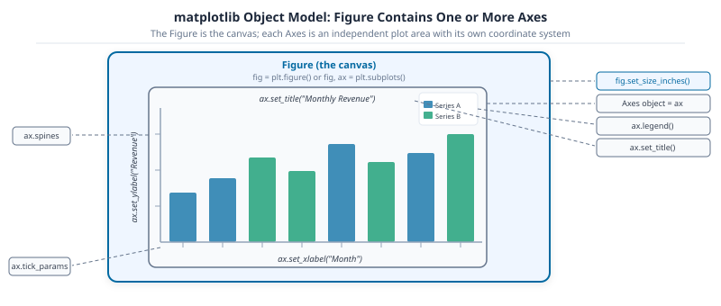
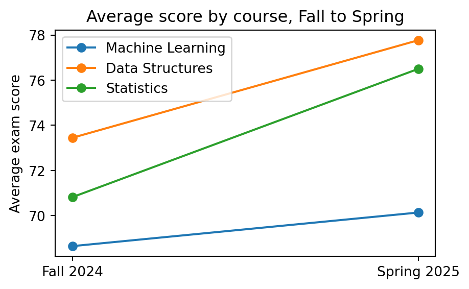
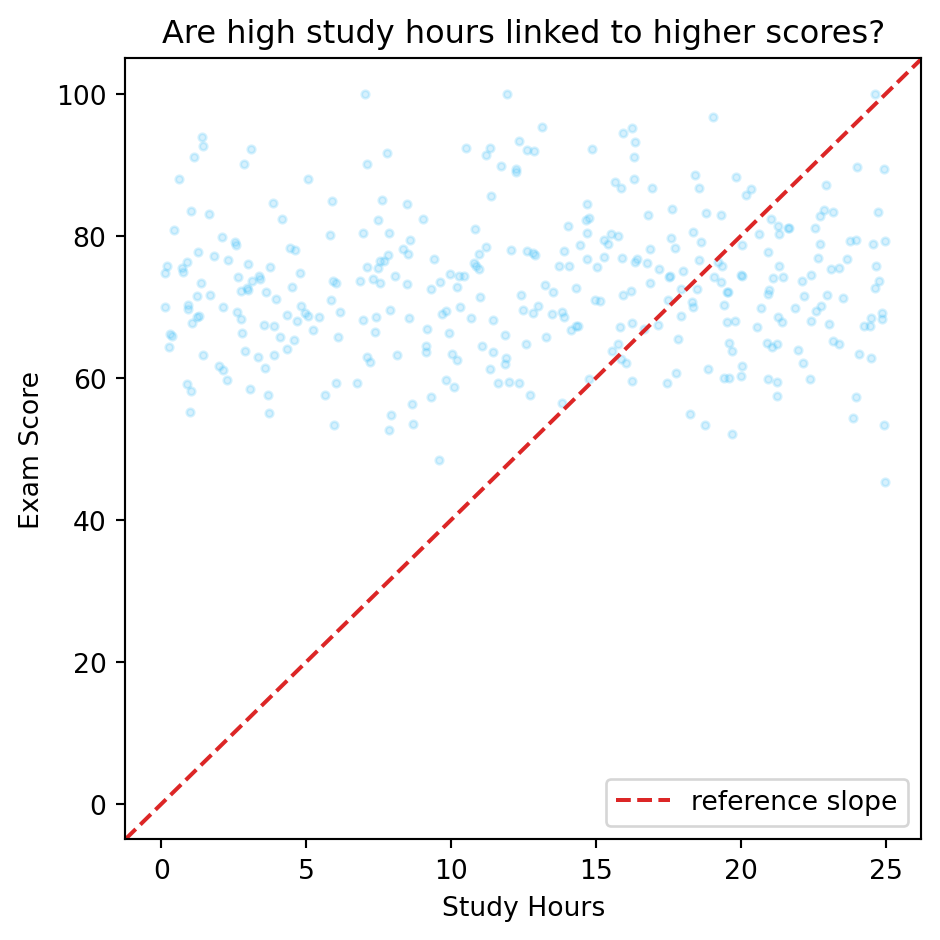
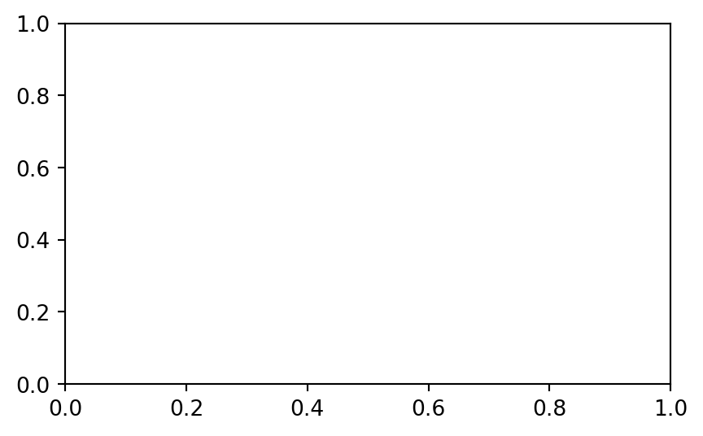
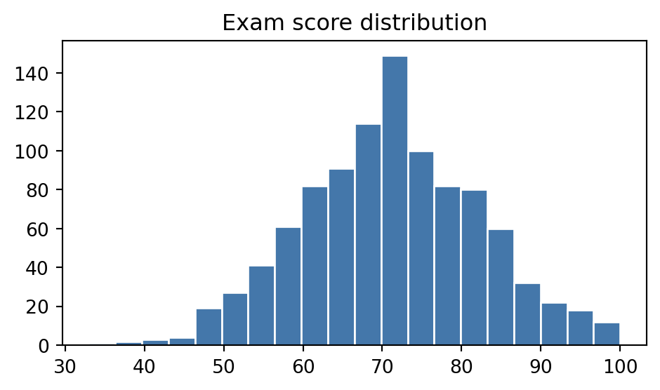
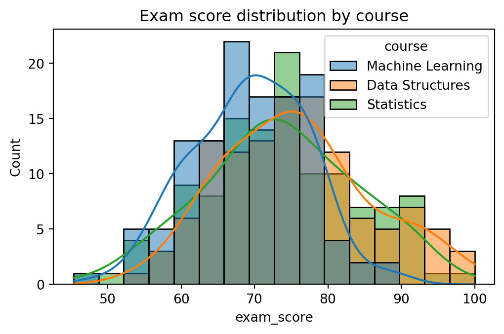
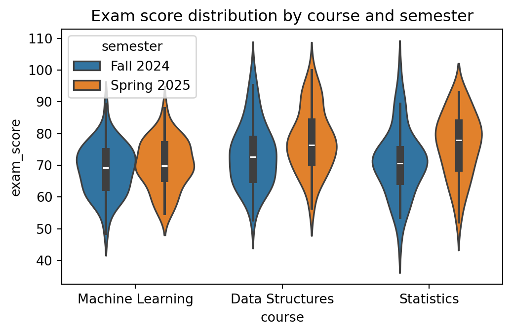
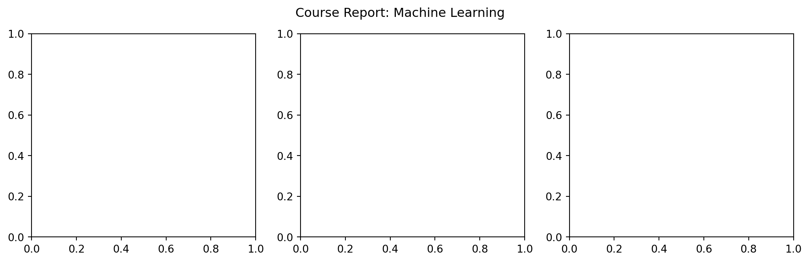

You’ve just finished cleaning university_analytics.csv. The head looks right, the dtypes are correct, the nulls are gone. Then your manager asks: “What does the score distribution actually look like?” You could print quartiles. You could sort and read 2,400 rows. Or you could write three lines of matplotlib and see the entire shape in half a second.
Part 4b introduced NumPy arrays as the numerical backbone. This notebook puts those arrays on screen. You will build every standard chart type, compose multi-panel figures, and learn the seaborn shortcut for statistical graphics. Part 6 (09-lets-plot.ipynb) introduces a different approach entirely: the grammar of graphics.
This notebook follows Parts 1-4. You should have numpy and matplotlib installed (pip install matplotlib seaborn). All code uses the object-oriented fig, ax = plt.subplots() pattern – not the legacy plt.plot() state machine.
Python’s Plotting Landscape
You’ve just finished cleaning university_analytics.csv. The head looks right, the dtypes are correct, the nulls are gone. Then your manager asks: “What does the score distribution actually look like?” You could print quartiles. You could sort and read through 2,400 rows. Or you could produce one chart that answers the question before the sentence is finished.
That chart needs a library. Python has several, and they make different trade-offs:
This chapter focuses on Matplotlib and Seaborn. Every other library in the list either wraps Matplotlib, exports to it, or assumes you understand it. Matplotlib is the bedrock: learn it once and every other plotting library becomes a set of shortcuts on top of something you already know.
Already in your environment
Both libraries are in pyproject.toml. For a standalone project:
uv add matplotlib seaborn
NoteLearning Objectives
By the end of Part 5 you will be able to:
#
Skill
Covered in
1
Explain the Figure/Axes object model and why it matters
Sec. 1
2
Build line, scatter, bar, and histogram charts with the object-oriented API
Sec. 2
3
Lay out and compare multiple Axes in one Figure
Sec. 3
4
Save a figure at the right resolution and format for its destination
Sec. 3
5
Use seaborn for one-line statistical graphics, then keep customising with matplotlib
Sec. 4
1. Why Visualise? The Figure and Axes
A table of a thousand exam scores tells you nothing at a glance. A histogram of the same thousand scores tells you the shape of the distribution in about half a second. That is the entire case for visualisation: it trades a small amount of precision for a large amount of immediate understanding, which is exactly what you want before you have decided which question to ask next.
import numpy as nprng = np.random.default_rng(7)exam_scores = rng.normal(loc=72, scale=12, size=1000).clip(0, 100)print(f"mean : {exam_scores.mean():.1f}")print(f"median : {np.median(exam_scores):.1f}")print(f"std : {exam_scores.std():.1f}")# The numbers alone do not tell you whether the distribution is symmetric,# has a long tail, or is bimodal. A histogram answers that in one look.
mean : 71.1
median : 71.2
std : 11.3
matplotlib has two APIs for building the same chart. The older one, pyplot (plt.plot(...)), is a state machine: it always draws onto “whichever figure was most recently touched,” which is fine for a single quick chart and confusing the moment you need two charts side by side. The object-oriented API is explicit instead: you ask for a Figure (the whole canvas) and one or more Axes (an individual plot inside it), then call methods directly on the Axes you want to draw on.
import matplotlib.pyplot as plt# The object-oriented pattern you will use for almost every chart in this# notebook: ask for a Figure and an Axes, then call methods on the Axes.fig, ax = plt.subplots(figsize=(5, 3))ax.hist(exam_scores, bins=20, color="#4477AA", edgecolor="white")ax.set_xlabel("Exam score")ax.set_ylabel("Number of students")ax.set_title("Exam score distribution");
Key Concept: Figure vs. Axes
A Figure is the whole canvas: the window or page a chart is drawn on, and the thing you save to a file. An Axes is one plot inside that canvas, with its own x-axis, y-axis, title, and data. fig, ax = plt.subplots() gives you one of each. Every method that actually draws data (.plot(), .scatter(), .bar(), .hist()) lives on the Axes, not the Figure.
The dashed boundary below is the one thing in this diagram that has no real line of code behind it: it’s just there to make the Figure’s own edge visible, since otherwise it’s easy to forget it exists at all.

matplotlib object model: the Figure is the outer canvas containing one or more Axes. The Axes holds the plot area with title, axis labels, ticks, data, and optional legend.
Common Mistake: Mixing plt.plot() and ax.plot()
plt.title(“x”) sets the title of whichever Axes pyplot thinks is “current”, which silently changes after you create a new subplot. The moment you have more than one Axes, calling plt.xlabel() instead of ax.set_xlabel() is a common way to label the wrong chart. Once you have an ax object, call methods on it directly and skip plt.* entirely.
Activity 1 - Your First Figure/Axes Chart
Goal: Build a histogram using the object-oriented pattern.
1. Create 500 normally distributed exam scores: scores = np.random.default_rng(42).normal(72, 12, 500).clip(0, 100). 2. Call fig, ax = plt.subplots(figsize=(7, 4)). 3. Plot a histogram with 20 bins: ax.hist(scores, bins=20, color=‘#0369A1’, edgecolor=‘white’). 4. Add a title and x/y labels with ax.set_title(), ax.set_xlabel(), ax.set_ylabel(). 5. Add a vertical line at the mean: ax.axvline(scores.mean(), color=‘#DC2626’, lw=2, label=‘mean’).
Expected: a labelled histogram with a red mean line.
2. Core Chart Types
Four chart types cover most of what you will plot day to day. Each answers a different question, and picking the wrong one is the fastest way to make a chart that looks fine but says nothing useful.
Key Concept: Match chart type to the question, not the data
Each chart type answers one question well and others poorly: Line: how does a value change over time or sequence? Scatter: is there a relationship between two continuous variables? Bar: how do discrete categories compare? Histogram: what is the distribution of a single variable? Picking the wrong type is the fastest way to make a chart that looks fine but says nothing.
# Build the running dataset: exam results across three courses and two# semesters for the university analytics platform.rng = np.random.default_rng(42)courses = np.array(["Machine Learning", "Data Structures", "Statistics"])semesters = np.array(["Fall 2024", "Spring 2025"])n_per_group =60course_col = np.repeat(courses, n_per_group *len(semesters))semester_col = np.tile(np.repeat(semesters, n_per_group), len(courses))# Each course has a slightly different difficulty and improves slightly# from Fall to Spring, to give the line chart in this section something# real to show.course_base = {"Machine Learning": 68, "Data Structures": 74, "Statistics": 71}semester_bump = {"Fall 2024": 0, "Spring 2025": 4}exam_score = np.array( [rng.normal(course_base[c] + semester_bump[s], 10) for c, s inzip(course_col, semester_col, strict=True)]).clip(0, 100)study_hours = rng.uniform(0, 25, size=len(course_col))attendance_pct = rng.uniform(50, 100, size=len(course_col))print(f"rows: {len(course_col)}")print(f"courses: {courses}")
Line chart, for a trend across an ordered sequence. Here, average score per course from Fall to Spring:
fig, ax = plt.subplots(figsize=(5, 3))for course in courses: course_mask = course_col == course means = [exam_score[course_mask & (semester_col == s)].mean() for s in semesters] ax.plot(semesters, means, marker="o", label=course)ax.set_ylabel("Average exam score")ax.set_title("Average score by course, Fall to Spring")ax.legend();

Scatter plot, for the relationship between two continuous variables. Here, study hours against exam score:
Pro Tip: Add an infinite reference line with ax.axline()
ax.axline(xy1, slope=m) draws an infinite line through point xy1 at gradient m. Unlike ax.plot(), which clips to the data you provide, axline always extends to the full axis range even when the axes limits change later. Use it to add a y = x diagonal (slope 1 through the origin) on any scatter of two variables that should ideally be equal.
fig, ax = plt.subplots(figsize=(5, 5))ax.scatter(study_hours, exam_score, alpha=0.2, s=8, color="#38BDF8")ax.axline((0, 0), slope=4, color="#DC2626", linewidth=1.5, linestyle="--", label="reference slope")ax.set_xlabel("Study Hours")ax.set_ylabel("Exam Score")ax.set_title("Are high study hours linked to higher scores?")ax.legend()plt.tight_layout()plt.show()

Bar chart, for comparing a single number across categories. Here, average score per course:
course_means = [exam_score[course_col == c].mean() for c in courses]fig, ax = plt.subplots(figsize=(5, 3))ax.bar(courses, course_means, color=["#4477AA", "#EE6677", "#228833"])ax.set_ylabel("Average exam score")ax.set_title("Average score by course")ax.tick_params(axis="x", labelrotation=15);
Pro Tip: Use ax.bar_label() to annotate bar values automatically
Adding the numeric value above each bar used to mean a manual loop calling ax.text() for each rectangle. Since matplotlib 3.4, ax.bar_label(container) does it in one line. ax.bar() returns a BarContainer; pass it to bar_label and optionally format the numbers with fmt:
fmt accepts a format string (applied to each value) or a labels keyword with an explicit list. padding pushes the text a few points above the bar top.
Activity 2 - Attendance Histogram
Goal: Plot a histogram of attendance_pct with 15 bins, label both axes, and give it a title. Use the object-oriented pattern: fig, ax = plt.subplots(), then call methods on ax.
fig, ax = plt.subplots(figsize=(5, 3))
ax.hist(attendance_pct, bins=15, ...)
# expect a roughly uniform spread between 50 and 100, since
# attendance_pct was generated with rng.uniform(50, 100, ...)
fig, ax = plt.subplots(figsize=(5, 3))# TODO: plot the histogram, then set xlabel, ylabel, and title...fig

Pro Tip: A trailing bare fig displays the figure in Jupyter
Jupyter displays the last expression in a cell automatically, the same way it prints a bare x on its own line. Ending a plotting cell with fig (or letting ax.hist(…) be the last call) shows the chart without an explicit plt.show(), which you only need outside a notebook.
3. Multiple Axes and Saving Figures
Real analysis rarely stops at one chart. plt.subplots(nrows, ncols) returns a whole grid of Axes at once, as a NumPy array, so you can loop over it the same way you looped over any other array in Part 4.
Key Concept: subplots returns a NumPy array of Axes – loop over it with .flat
fig, axes = plt.subplots(2, 3) gives you a (2, 3) NumPy array of Axes objects. Use axes.flat to iterate over all six in order, regardless of grid shape. sharey=True links the y-axis scale across all panels so comparisons stay honest.
axes.flat works regardless of the grid shape: a 2x2 grid of Axes is a 2D array, but .flat always gives you a flat iterator over all of them, in row-major order. sharey=True forces every Axes in the grid to use the same y-axis range, which is what makes the three histograms above honestly comparable instead of each rescaled to its own data.
Common Mistake: Comparing histograms with different y-axis scales
Without sharey=True, matplotlib autoscales each Axes to its own data. Three histograms that look like they have the same number of students can actually have wildly different counts, because each y-axis silently uses a different scale. Whenever you put similar charts side by side for comparison, force a shared scale.
Saving a figure has two choices that matter: resolution (dpi, dots per inch) and file format. A raster format (PNG) at low dpi looks blurry when scaled up; a vector format (SVG or PDF) stays sharp at any size because it stores shapes, not pixels. Call fig.tight_layout() before saving to close any gaps between subplots and prevent axis labels from being clipped:
from pathlib import Pathoutput_dir = Path("tmp_plots")output_dir.mkdir(exist_ok=True)fig, ax = plt.subplots(figsize=(5, 3))ax.hist(exam_scores, bins=20, color="#4477AA", edgecolor="white")ax.set_title("Exam score distribution")fig.tight_layout()# PNG: fine for slides and notebooks, blurry if you zoom in or print largefig.savefig(output_dir /"scores.png", dpi=150, bbox_inches="tight")# SVG: vector format, stays crisp at any size, the right choice for reportsfig.savefig(output_dir /"scores.svg", bbox_inches="tight")print(sorted(p.name for p in output_dir.iterdir()))import shutilshutil.rmtree(output_dir)
['scores.png', 'scores.svg']

Pro Tip: Default to vector formats for anything that gets printed or zoomed
PNG and JPEG store a fixed grid of pixels: stretch them and they blur. SVG and PDF store the actual shapes and text, so they render sharp at any zoom level or print size. Save PNG for quick previews and web thumbnails; save SVG or PDF for anything that ends up in a report, slide deck, or paper.
Activity 3 - Three-Panel Score Comparison
Goal: Create a 1x3 grid comparing scores across three groups.
1. Create three arrays: maths = np.array([78,82,91,65,88,74,95,61,83,79]), stats = np.array([72,88,65,91,77,83,69,94,71,86]), prog = np.array([85,79,92,68,88,76,93,71,84,90]). 2. Call fig, axes = plt.subplots(1, 3, figsize=(11, 3.5), sharey=True). 3. Loop over zip(axes.flat, [‘Maths’,‘Stats’,‘Programming’], [maths, stats, prog]) and plot a histogram on each axis. 4. Set a title on each axis and a shared y-label on the leftmost axis only.
Expected: three side-by-side histograms sharing the same y-scale.
4. Seaborn: Statistical Graphics in One Line
Seaborn is built directly on matplotlib. It does not replace anything from Sections 1-3: it adds a layer of functions that know how to take a whole DataFrame, split it by a category, color each group, and draw a legend, all in a single call. Reaching for seaborn first whenever your chart needs grouping or a statistical summary saves a genuine amount of code.
Seaborn expects tidy data: one row per observation, one column per variable. A full pandas introduction comes later in the data analysis tutorials, but building a DataFrame from arrays you already have is one line:
import seaborn as snsfig, ax = plt.subplots(figsize=(6, 3.5))sns.histplot(data=results, x="exam_score", hue="course", kde=True, ax=ax)ax.set_title("Exam score distribution by course");

Key Concept: Seaborn returns a matplotlib Axes
sns.histplot(…, ax=ax) draws onto the Axes you pass it and returns that same Axes. Nothing from Sections 1-3 is wasted: every ax.set_title(), ax.set_xlabel(), or fig.savefig() you already know still works on a seaborn chart. Seaborn only replaces the part where you would otherwise have looped over groups and called ax.hist() once per group yourself.
hue is seaborn’s primary grouping parameter: pass a column name and seaborn splits the data by that column, assigns each group a colour from its default palette, and draws a legend automatically. palette overrides those colours, accepting a named seaborn palette ("tab10", "Set2") or a list of hex codes. style (available in sns.lineplot and sns.scatterplot) adds a second visual channel by varying the marker shape or line style per group, which helps when a chart may be viewed in greyscale.
sns.boxplot summarises a whole distribution (median, quartiles, outliers) per category in one call, the kind of comparison that would take a loop and several ax.hist() calls in raw matplotlib:
fig, ax = plt.subplots(figsize=(6, 3.5))sns.boxplot(data=results, x="course", y="exam_score", hue="semester", ax=ax)ax.set_title("Exam score by course and semester");
sns.violinplot() shows the full shape of the distribution on both sides of a central axis, not just the five-number summary a boxplot gives. Use it when you suspect a distribution is skewed or has more than one peak in a way the box would hide:
fig, ax = plt.subplots(figsize=(6, 3.5))sns.violinplot(data=results, x="course", y="exam_score", hue="semester", ax=ax)ax.set_title("Exam score distribution by course and semester");

sns.heatmap is the standard way to visualise a correlation matrix. Pass it results[numeric_cols].corr(), a small DataFrame seaborn happily turns into a colour grid with the actual numbers annotated:
Hint: This is almost identical to the boxplot above, just with a different y-axis and no hue.
fig, ax = plt.subplots(figsize=(6, 3.5))# TODO: boxplot of study_hours by course, plus a title...fig
Pro Tip: Exploratory charts and presentation charts have different goals
Seaborn’s defaults are optimised for exploratory use: fast, readable charts that help you understand the data before you have decided what question to ask. A presentation chart, one headed for a report or a slide deck, needs deliberate title wording, axis labels in the reader’s language, and a colour palette that matches the project’s house style. Part 7 covers that transition.
5. Flexible Layouts with subplot_mosaic
The subplots(rows, cols) grid forces every panel to the same size. fig.subplot_mosaic() lets you describe a layout by name: a wide chart on top and two narrow ones below, a tall panel beside a grid of small ones. You draw the layout as a list of strings where each letter names a panel.
Key Concept: Mosaic layouts use repeated letters to span cells
The mosaic [[“hist”, “hist”], [“scatter”, “box”]] means: row 1 has one panel called “hist” spanning two columns; row 2 has “scatter” and “box” side by side. Repeated letters span multiple cells. Reference each panel by name via axes[“hist”]. The layout reads like ASCII art, which makes it easy to reason about before you see the output.
Capstone: A Three-Panel Course Report
Combine everything from this notebook into one Figure with three Axes side by side: a histogram of scores for one course, a scatter of study hours against score for the same course, and a bar chart comparing average scores across all three courses. This is the shape of report you would actually hand to a department head.
Capstone Exercise - Three-Panel Report
Goal: Build a (1, 3) grid of Axes:
Axes 0: histogram of exam_score for “Machine Learning” only
Axes 1: scatter of study_hours vs. exam_score, same course only
Axes 2: bar chart of average exam_score per course (all courses)
Give the Figure an overall title with fig.suptitle() and each Axes its own ax.set_title(). Hint: Filter with ml_mask = results[“course”] == “Machine Learning”, then index results[ml_mask] for the first two panels.
fig, axes = plt.subplots(1, 3, figsize=(13, 3.5))ml_mask = results["course"] =="Machine Learning"ml_results = results[ml_mask]# TODO panel 0: histogram of ml_results["exam_score"]# TODO panel 1: scatter of ml_results["study_hours"] vs ml_results["exam_score"]# TODO panel 2: bar chart of average exam_score per course (all courses)...fig.suptitle("Course Report: Machine Learning")fig

Pro Tip: seaborn 0.12+ ships a declarative objects API alongside the classic functions
Seaborn 0.12 introduced seaborn.objects (so.Plot()), a fully composable layer built on the same grammar-of-graphics ideas as Part 6’s Lets-Plot. It’s worth knowing even if you do not switch immediately:
import seaborn.objects as so
(
so.Plot(results, x="study_hours", y="exam_score", color="course")
.add(so.Dot(alpha=0.4))
.label(title="Study hours vs. exam score")
)
so.Plot() is lazy (nothing renders until you call .show() or display it), composable (chain .add() calls to layer marks), and consistent with the Lets-Plot mental model from Part 6. For exploratory work the classic sns.* functions are still faster to type; so.Plot() pays off when a chart needs several layers or custom marks.